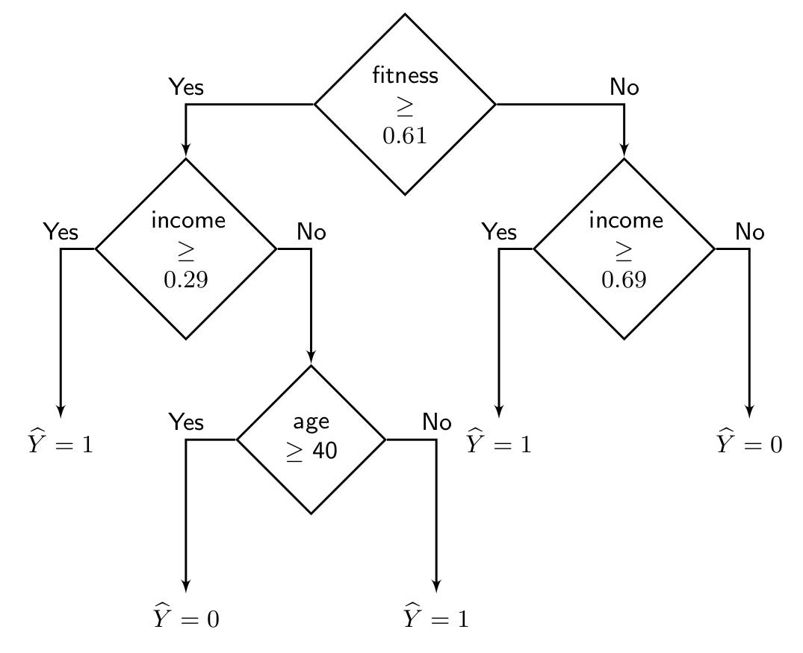

The last decades have witnessed a significant success of machine learning as a predictive system. Machine learning is now applied in different safety-critical domains, such as education, law, medicine, and transportation. In these domains, it is important that the deployed model is making fair decisions with respect to different demographic populations. Since machine learning is oblivious to societal good or bad, the field of fairness in machine learning has proposed different fairness definitions and algorithms to tackle the fairness challenge. In this blog, our aim is to verify different fairness definitions under then lens of different fairness algorithms in a single framework. At the end of this blog, the reader will learn how formal methods can be applied for fairness verification in machine learning.
We consider a simple classification task with the object or deciding whether an individual is eligible for health insurance or not. The classifier takes three features as input: {fitness, income, age}. We categorize the features into two types: sensitive features $ \mathbf{A} = \{{\text{age}}\}$ and nonsensitive features $ \mathbf{X} = \{\text{fitness, income}\}$. Intuitively, our goal is to learn a classifier that does not discriminate based on a sensitive feature. Based on the value of the sensitive feature, we consider two different sensitive groups: younger group with age $ < 40 $ and elderly group with age $ \ge 40 $. In the following, we present a decision tree classifier with a single node, which seems to be unfair at the first glance.
This classifier makes a positive prediction when the individual belongs to the younger group and a negative prediction otherwise. Thus, as we plot the probability of positive prediction of the classifier separately for the two sensitive groups, we see that the younger group has a probability of $ 1 $ for getting positive prediction while the elderly group has $ 0 $ probability. Based on the outcome of the prediction, there are different ways to quantify the unfairness/bias of a classifier. We refer to the disparate impact notion of fairness metric in the following.
\[ \text{Disparate impact} =\frac{\min_{\mathbf{a}} \Pr[\widehat{Y} = 1 | \mathbf{A} = \mathbf{a}]}{\max_{\mathbf{a}} \Pr[\widehat{Y} = 1 | \mathbf{A}= \mathbf{a}]} = \frac{0}{1} = 0\]Intuitively, as the disparate impact ratio is close to $ 1 $, the classifier becomes more fair. In our case, unfortunately the classifier demonstrates the worst fairness results since the ratio is $ 0 $. Let us add few more nodes to the decision tree classifier and see if we can improve fairness.
In the last decision tree, we see that the probability of positive prediction is almost equal for the two sensitive groups, with younger group being slightly favored.
\[ \text{Disparate impact} =\frac{\min_{\mathbf{a}} \Pr[\widehat{Y} = 1 | \mathbf{A} = \mathbf{a}]}{\max_{\mathbf{a}} \Pr[\widehat{Y} = 1 | \mathbf{A}= \mathbf{a}]} = \frac{0.43}{0.46} = 0.93\]Next, we discuss how to verify the fairness of a classifier, such as disparate impact, given the distribution of features.
Given a binary classifier $ \mathcal{M} : (\mathbf{X}, \mathbf{A}) \rightarrow \widehat{Y} \in \{0,1\} $, the distribution of features $ (\mathbf{X}, \mathbf{A}) \sim \mathcal{D} $, and a fairness threshold $ \delta \in [0,1] $, our objective is to check whether the fairness of the classifier given the distribution, denoted by $ f(\mathcal{M}, \mathcal{D}) $, satisfies the desired level of fairness. Formally, we verify the following: \[ f(\mathcal{M}, \mathcal{D}) \ge \delta \] In the literature, this problem is known as probabilistic fairness verification. This problem is different from the typical approach of evaluating the fairness of a classifier from a finite sampled dataset. Probabilistic fairness verification provides a principled approach to quantify the fairness of the classifier beyond finite samples. Such a fairness verifier can be deployed as a auditor for fairness violation in practical system, as demonstrated in this paper.